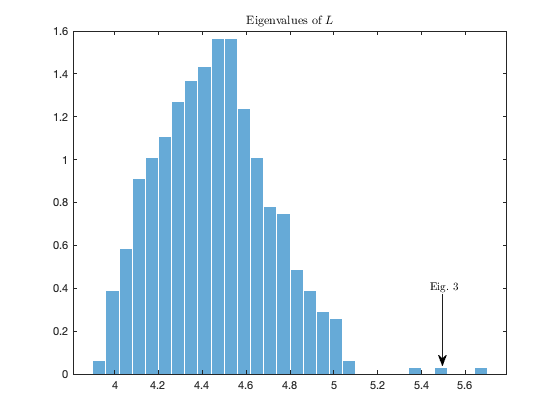
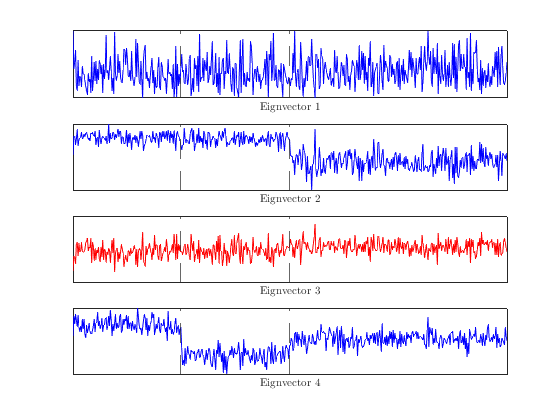
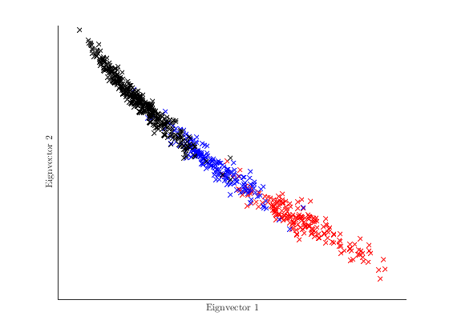
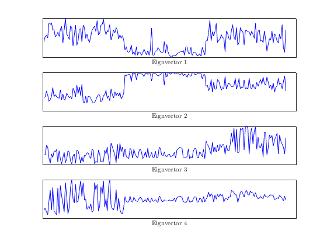
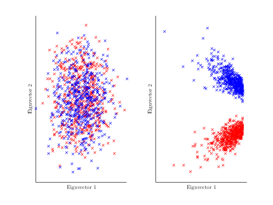
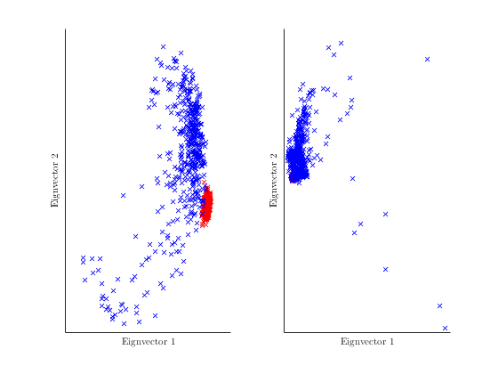
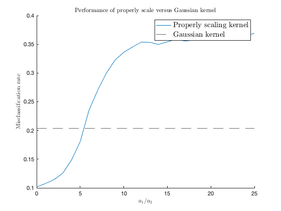

Section 4.5.1 Application to kernel spectral clustering
This page contains simulations in Section 4.5.1.
Contents
Non-informative eigenvector of
close all; clear; clc coeff = 4; p = 512*coeff; n = 128*coeff; cs = [1/4, 1/4, 1/2]; k = length(cs); % nb of classes test_case = 'means'; switch test_case case 'means' means = @(i) [zeros(i-1,1);1;zeros(p-i,1)]*5; covs = @(i) eye(p); case 'var' means = @(i) zeros(p,1); covs = @(i) eye(p)*(1+(-1)^(i)/sqrt(p)*5); case 'orth' means = @(i) zeros(p,1); covs = @(i) toeplitz((4*(i-1)/10).^(0:(p-1))); case 'mixed' means = @(i) [-ones(p/2,1);ones(p/2,1)]/sqrt(p); covs = @(i) eye(p)*(1+(i-1)/sqrt(p)*10); end rng(1004); W=zeros(p,n); for i=1:k W(:,sum(cs(1:(i-1)))*n+1:sum(cs(1:i))*n)=sqrtm(covs(i))*randn(p,cs(i)*n); end X=zeros(p,n); for i=1:k X(:,sum(cs(1:(i-1)))*n+1:sum(cs(1:i))*n)=W(:,sum(cs(1:(i-1)))*n+1:sum(cs(1:i))*n)+means(i)*ones(1,cs(i)*n); end XX = X'*X; tau = 2; f = @(t) 4*(t-tau).^2-(t-tau)+4; K = f((-2*(XX)+diag(XX)*ones(1,n)+ones(n,1)*diag(XX)')/p); D = diag(K*ones(n,1)); L = n*diag(1./sqrt(diag(D)))*K*diag(1./sqrt(diag(D))); [V,eigs_L] = eig(L,'vector'); [~,ind] = sort(eigs_L); eigs_L = eigs_L(ind); V = V(:,ind); figure histogram(eigs_L(1:n-1), 30, 'Normalization', 'pdf') title('Eigenvalues of $L$','Interpreter', 'latex'); annotation('textarrow',[0.79,0.79],[.3,0.13],'String','Eig. 3', 'Interpreter', 'latex') figure for i=1:4 subplot(4,1,i) if i ==3 plot(V(:,n-i+1),'r') else plot(V(:,n-i+1),'b') end set(gca,'xtick',[], 'ytick',[]) xlabel(['Eignvector ',num2str(i)], 'Interpreter', 'latex'); end 
Separation with covariance trace information
close all; clear; clc coeff = 6; p = 512*coeff; n = 128*coeff; cs = [1/4, 1/4, 1/2]; k = length(cs); % nb of classes test_case = 'var'; switch test_case case 'means' means = @(i) [zeros(i-1,1);1;zeros(p-i,1)]*5; covs = @(i) eye(p); case 'var' means = @(i) zeros(p,1); covs = @(i) eye(p)*(1+4*(i-1)/sqrt(p)); case 'orth' means = @(i) zeros(p,1); covs = @(i) toeplitz((4*(i-1)/10).^(0:(p-1))); case 'mixed' means = @(i) [-ones(p/2,1);ones(p/2,1)]/sqrt(p); covs = @(i) eye(p)*(1+(i-1)/sqrt(p)*10); end rng(928); W=zeros(p,n); for i=1:k W(:,sum(cs(1:(i-1)))*n+1:sum(cs(1:i))*n)=sqrtm(covs(i))*randn(p,cs(i)*n); end X=zeros(p,n); for i=1:k X(:,sum(cs(1:(i-1)))*n+1:sum(cs(1:i))*n)=W(:,sum(cs(1:(i-1)))*n+1:sum(cs(1:i))*n)+means(i)*ones(1,cs(i)*n); end XX = X'*X; tau = 0; for a = 1:k tau = tau + 2*cs(a)*trace(covs(a))/p; end f = @(t) 1.5*(t-tau).^2-(t-tau)+5; K = f((-2*(XX)+diag(XX)*ones(1,n)+ones(n,1)*diag(XX)')/p); D = diag(K*ones(n,1)); L = n*diag(1./sqrt(diag(D)))*K*diag(1./sqrt(diag(D))); [V,eigs_L] = eig(L,'vector'); [~,ind] = sort(eigs_L); eigs_L = eigs_L(ind); V = V(:,ind); v1 = V(:,n); v2 = V(:,n-1); v3 = V(:,n-2); switch test_case case 'means' figure hold on plot(v2(1:n*cs(1)),v3(1:n*cs(1)),'rx') plot(v2(n*cs(1)+1:n-n*cs(3)),v3(n*cs(1)+1:n-n*cs(3)),'bx') plot(v2(n-n*cs(3)+1:n),v3(n-n*cs(3)+1:n),'kx') set(gca,'xtick',[], 'ytick',[]) xlabel('Eignvector $2$', 'Interpreter', 'latex'); ylabel('Eignvector $3$', 'Interpreter', 'latex'); case 'var' figure hold on plot(v1(1:n*cs(1)),v2(1:n*cs(1)),'rx') plot(v1(n*cs(1)+1:n-n*cs(3)),v2(n*cs(1)+1:n-n*cs(3)),'bx') plot(v1(n-n*cs(3)+1:n),v2(n-n*cs(3)+1:n),'kx') set(gca,'xtick',[], 'ytick',[]) xlabel('Eignvector $1$', 'Interpreter', 'latex'); ylabel('Eignvector $2$', 'Interpreter', 'latex'); end
Implementation on MNIST data
clc; close all; clear; n = 192; cs = [1/3, 1/3, 1/3]; k = length(cs); % nb of classes init_data = loadMNISTImages('../../datasets/MNIST/train-images-idx3-ubyte'); init_labels = loadMNISTLabels('../../datasets/MNIST/train-labels-idx1-ubyte'); [labels,idx_init_labels]=sort(init_labels,'ascend'); data=init_data(:,idx_init_labels); init_n=length(data(1,:)); p=length(data(:,1)); selected_labels=[0 1 2]; if length(selected_labels) ~= k error('Error: selected labels and nb of classes not equal!') end
Data preprecessing
data = data/max(data(:)); mean_data=mean(data,2); norm2_data=0; for i=1:init_n norm2_data=norm2_data+1/init_n*norm(data(:,i)-mean_data)^2; end data=(data-mean_data*ones(1,size(data,2)))/sqrt(norm2_data)*sqrt(p); selected_data = cell(k,1); cascade_selected_data=[]; j=1; for i=selected_labels selected_data{j}=data(:,labels==i); cascade_selected_data = [cascade_selected_data, selected_data{j}]; j = j+1; end means = @(i) mean(selected_data{i},2); covs = @(i) 1/length(selected_data{i})*(selected_data{i}*selected_data{i}')-means(i)*means(i)'; X=zeros(p,n); for i = 1:k data = selected_data{i}; X(:,sum(cs(1:(i-1)))*n+1:sum(cs(1:i))*n)=data(:,1:n*cs(i)); end XX=X'*X; K=exp(-1/2/p*(-2*XX+diag(XX)*ones(1,n)+ones(n,1)*(diag(XX)'))); D = diag(K*ones(n,1)); L = n*diag(1./sqrt(diag(D)))*K*diag(1./sqrt(diag(D))); [V,eigs_L] = eig(L,'vector'); [~,ind] = sort(eigs_L); eigs_L = eigs_L(ind); V = V(:,ind); figure for i=1:4 subplot(4,1,i) plot(V(:,n-i+1),'b') set(gca,'xtick',[], 'ytick',[]); xlabel(['Eignvector ',num2str(i)], 'Interpreter', 'latex'); end
 -$\beta$ inner-product kernels on Gaussian data
-$\beta$ inner-product kernels on Gaussian data
close all; clear; clc coeff = 1; p = 400*coeff; n = 1000*coeff; cs = [1/2 1/2]; k = length(cs); % nb of classes rng(928); Z = cell(k,1); for i = 1:k Z{i} = randn(p,p/2); end means = @(i) zeros(p,1); covs = @(i) .1*eye(p) + 2*Z{i}*(Z{i})'/p; covs_mean = cs(1)*covs(1) + cs(2)*covs(2); tau = 2*trace(covs_mean)/p; W=zeros(p,n); for i=1:k W(:,sum(cs(1:(i-1)))*n+1:sum(cs(1:i))*n)=sqrtm(covs(i))*randn(p,cs(i)*n); end X=zeros(p,n); for i=1:k X(:,sum(cs(1:(i-1)))*n+1:sum(cs(1:i))*n)=W(:,sum(cs(1:(i-1)))*n+1:sum(cs(1:i))*n)+means(i)*ones(1,cs(i)*n); end XX = X'*X; K1= exp(-(-2*XX+diag(XX)*ones(1,n)+ones(n,1)*(diag(XX)'))/p); %K2 =((-2*XX+diag(XX)*ones(1,n)+ones(n,1)*diag(XX)')/p-2).^2; K2 =((-2*XX+diag(XX)*ones(1,n)+ones(n,1)*diag(XX)')/p-2).^2; [V1,eigs_K1] = eig(K1,'vector'); [V2,eigs_K2] = eig(K2,'vector'); [~,ind] = sort(eigs_K1); V1 = V1(:,ind); [~,ind] = sort(eigs_K2); V2 = V2(:,ind); v1_1 = V1(:,n); v1_2 = V1(:,n-1); v2_1 = V2(:,n); v2_2 = V2(:,n-1); figure subplot(1,2,1) hold on plot(v1_1(1:n*cs(1)),v1_2(1:n*cs(1)),'rx') plot(v1_1(n*cs(1)+1:n),v1_2(n*cs(1)+1:n),'bx') set(gca,'xtick',[], 'ytick',[]) xlabel('Eignvector $1$', 'Interpreter', 'latex'); ylabel('Eignvector $2$', 'Interpreter', 'latex'); subplot(1,2,2) hold on plot(v2_1(1:n*cs(1)),v2_2(1:n*cs(1)),'rx') plot(v2_1(n*cs(1)+1:n),v2_2(n*cs(1)+1:n),'bx') set(gca,'xtick',[], 'ytick',[]) xlabel('Eignvector $1$', 'Interpreter', 'latex'); ylabel('Eignvector $2$', 'Interpreter', 'latex');
-$\beta$ inner-product kernels on EEG data
clc; close all; clear; n = 1000; cs = [1/2, 1/2]; k = length(cs); % nb of classes load ../../datasets/EEG_data.mat init_data = EEG_data; init_labels = EEG_labels; % load ../../datasets/BCI_data.mat % init_data = BCI_data; % init_labels = BCI_labels; [labels,idx_init_labels]=sort(init_labels,'ascend'); data=init_data(:,idx_init_labels); init_n=length(data(1,:)); p=length(data(:,1)); selected_labels=[1 4]; %or [1 4] if length(selected_labels) ~= k error('Error: selected labels and nb of classes not equal!') end
Data preprecessing
data = data/max(data(:)); mean_data=mean(data,2); norm2_data=0; for i=1:init_n norm2_data=norm2_data+1/init_n*norm(data(:,i)-mean_data)^2; end data=(data-mean_data*ones(1,size(data,2)))/sqrt(norm2_data)*sqrt(p); selected_data = cell(k,1); cascade_selected_data=[]; j=1; for i=selected_labels selected_data{j}=data(:,labels==i); cascade_selected_data = [cascade_selected_data, selected_data{j}]; j = j+1; end % mean_selected_data=mean(cascade_selected_data,2); % norm2_selected_data=mean(sum(abs(cascade_selected_data-mean_selected_data*ones(1,size(cascade_selected_data,2))).^2)); % % for j=1:length(selected_labels) % selected_data{j}=(selected_data{j}-mean_selected_data*ones(1,size(selected_data{j},2)))/sqrt(norm2_selected_data)*sqrt(p); % end means = @(i) mean(selected_data{i},2); covs = @(i) 1/length(selected_data{i})*(selected_data{i}*selected_data{i}')-means(i)*means(i)'; covs_mean = cs(1)*covs(1) + cs(2)*covs(2); tau = 2*trace(covs_mean)/p; covs_o = @(i) covs(i) - covs_mean; norm(means(1)-means(2)) [trace(covs_o(1)), trace(covs_o(2))]/sqrt(p) [trace(covs_o(1)*covs_o(1)) trace(covs_o(1)*covs_o(2)); trace(covs_o(2)*covs_o(1)) trace(covs_o(2)*covs_o(2))]/sqrt(p) X=zeros(p,n); for i = 1:k %data = selected_data{i}; data = selected_data{i}(:,randperm(size(selected_data{i},2))); X(:,sum(cs(1:(i-1)))*n+1:sum(cs(1:i))*n)=data(:,1:n*cs(i)); end P = eye(n) - ones(n)/n; X = X*P; XX = X'*X; dist_matrix = (-2*XX+diag(XX)*ones(1,n)+ones(n,1)*(diag(XX)'))/p; tau_estim = sum(dist_matrix(:))/n/(n-1); %K1 = exp(XX/p); f1 = @(x) exp(-x); %K1= exp(XX/p); K1 = f1(-2*XX/p+diag(XX)*ones(1,n)/p+ones(n,1)*(diag(XX)')/p); %K2 =((-2*XX+diag(XX)*ones(1,n)+ones(n,1)*diag(XX)')/p-2).^2; K2 =((-2*XX+diag(XX)*ones(1,n)+ones(n,1)*diag(XX)')/p-tau_estim).^2; %K2 = exp( - ((-2*XX+diag(XX)*ones(1,n)+ones(n,1)*diag(XX)')/p - tau_estim).^2 ); [V1,eigs_K1] = eig(K1,'vector'); [V2,eigs_K2] = eig(K2,'vector'); [~,ind] = sort(eigs_K1); V1 = V1(:,ind); [~,ind] = sort(eigs_K2); V2 = V2(:,ind); v1_1 = V1(:,n); v1_2 = V1(:,n-1); v2_1 = V2(:,n); v2_2 = V2(:,n-1); figure subplot(1,2,1) hold on plot(v1_1(1:n*cs(1)),v1_2(1:n*cs(1)),'rx') plot(v1_1(n*cs(1)+1:n),v1_2(n*cs(1)+1:n),'bx') set(gca,'xtick',[], 'ytick',[]) xlabel('Eignvector $1$', 'Interpreter', 'latex'); ylabel('Eignvector $2$', 'Interpreter', 'latex'); subplot(1,2,2) hold on plot(v2_1(1:n*cs(1)),v2_2(1:n*cs(1)),'rx') plot(v2_1(n*cs(1)+1:n),v2_2(n*cs(1)+1:n),'bx') set(gca,'xtick',[], 'ytick',[]) xlabel('Eignvector $1$', 'Interpreter', 'latex'); ylabel('Eignvector $2$', 'Interpreter', 'latex');
ans =
2.1978
ans =
-1.0928 1.0928
ans =
3.1751 -3.1751
-3.1751 3.1751
 V = V1; y =[-ones(n/2,1);ones(n/2,1)]; V_means=zeros(k,2); for i=1:k V_means(i,:)=mean(V(sum(cs(1:(i-1)))*n+1:sum(cs(1:i))*n,n-1:n)); end kmeans_output = kmeans(V(:,n-1:n),k,'Start', V_means); disp('perf of K1') disp(sum(kmeans_output==(y+3)/2)/n) figure subplot(1,2,1) hold on plot(v1_1(kmeans_output==1),v1_2(kmeans_output==1),'rx') plot(v1_1(kmeans_output==2),v1_2(kmeans_output==2),'bx') set(gca,'xtick',[], 'ytick',[]) xlabel('Eignvector $1$', 'Interpreter', 'latex'); ylabel('Eignvector $2$', 'Interpreter', 'latex'); V = V2; y =[-ones(n/2,1);ones(n/2,1)]; V_means=zeros(k,2); for i=1:k V_means(i,:)=mean(V(sum(cs(1:(i-1)))*n+1:sum(cs(1:i))*n,n-1:n)); end kmeans_output = kmeans(V(:,n-1:n),k,'Start', V_means); disp('perf of K2') disp(sum(kmeans_output==(y+3)/2)/n) subplot(1,2,2) hold on plot(v2_1(kmeans_output==1),v2_2(kmeans_output==1),'rx') plot(v2_1(kmeans_output==2),v2_2(kmeans_output==2),'bx') set(gca,'xtick',[], 'ytick',[]) xlabel('Eignvector $1$', 'Interpreter', 'latex'); ylabel('Eignvector $2$', 'Interpreter', 'latex'); % figure % subplot(1,2,1) % histogram(v1_2, 30) % subplot(1,2,2) % histogram(v2_2, 30) % % % % %% % clc % sprintf('(%f, %f)',[v2_1(1:n*cs(1)), v2_2(1:n*cs(1))]') % sprintf('(%f, %f)',[v2_1(n*cs(1)+1:n), v2_2(n*cs(1)+1:n)]')
perf of K1
0.8330
perf of K2
0.6330
